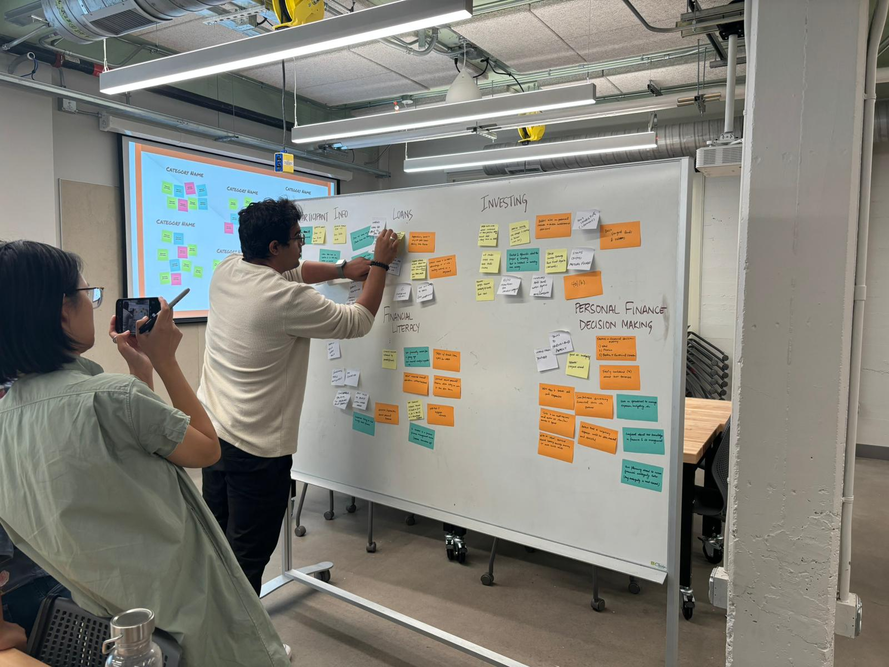
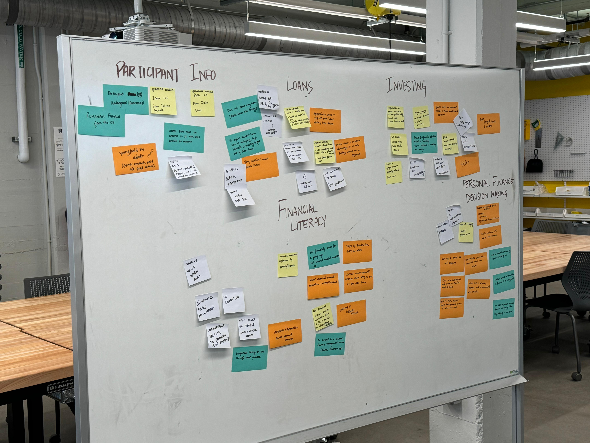
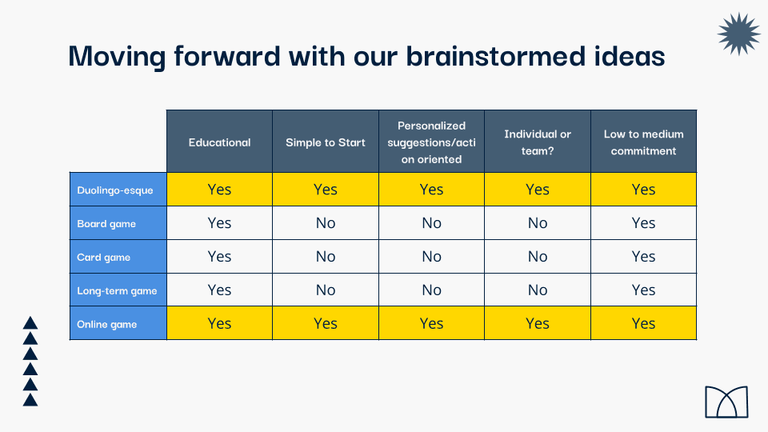
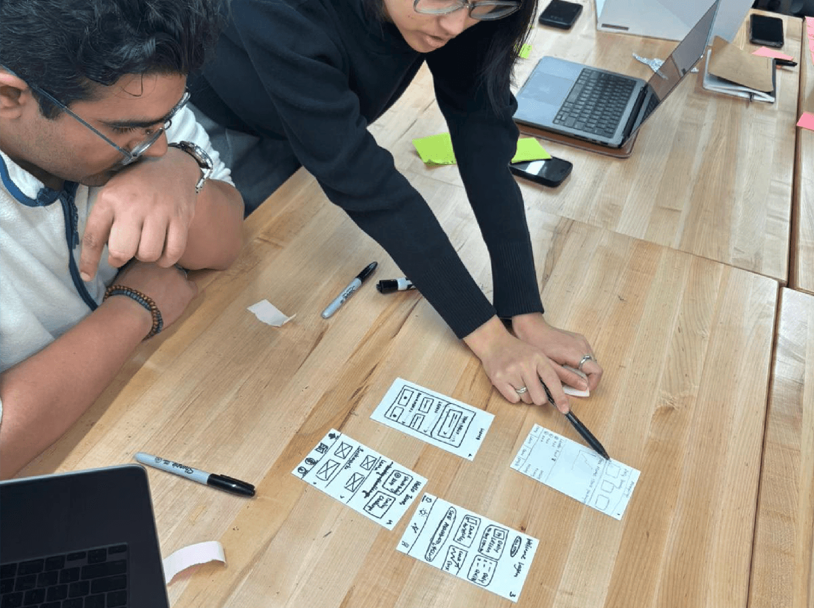
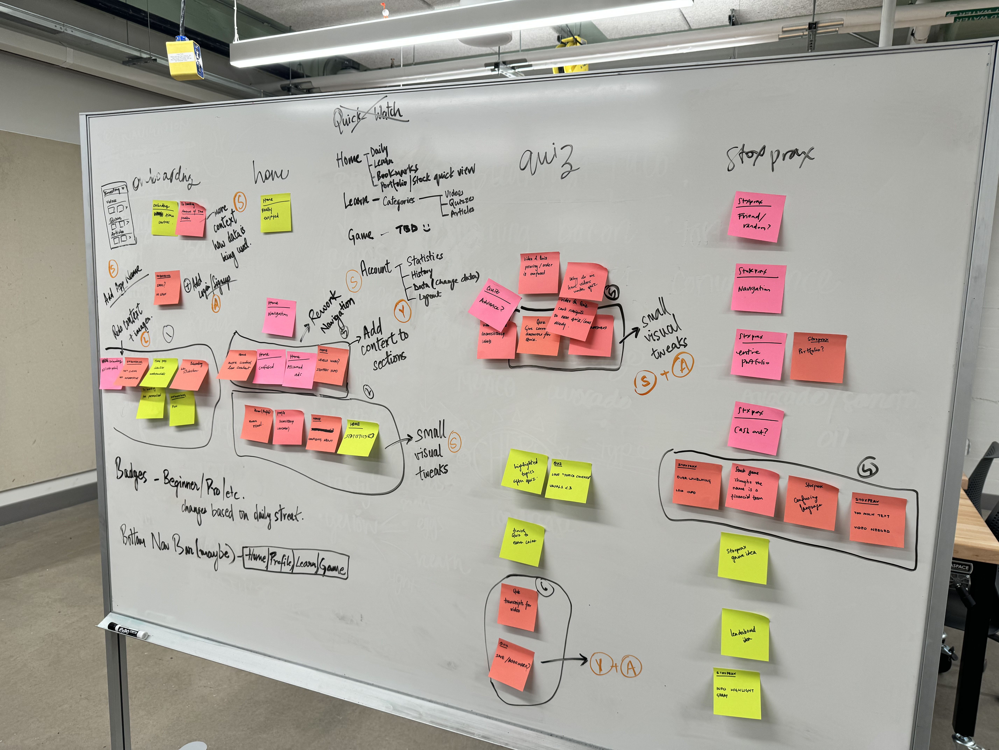
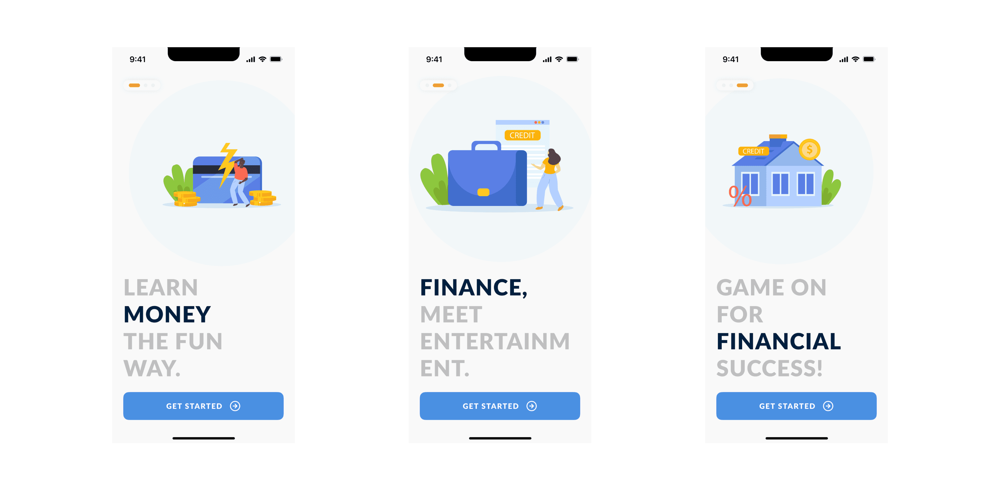
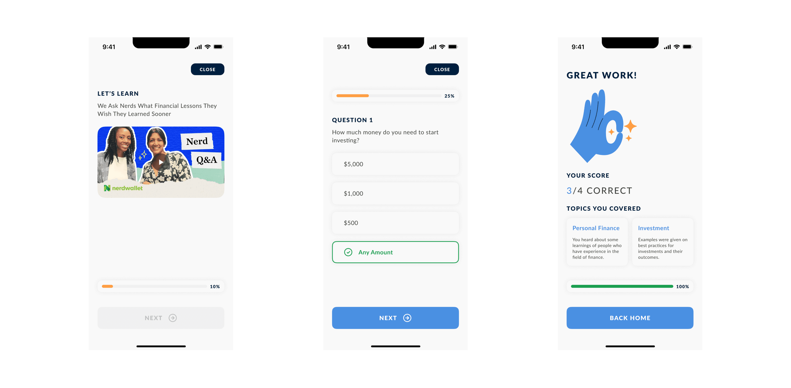
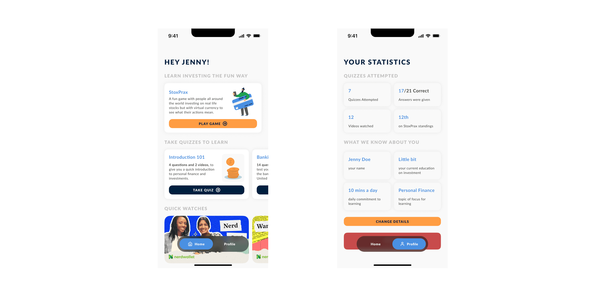

MoneyLingo
The problem wasn't financial literacy
Not everyone like's to read to much nowadays (thanks TikTok). See a comic strip?
Comic Strip ↓The Problem
Millennials carry disproportionate debt and low savings compared to older generations. So: teach people to build wealth.
Research
Understanding the need
We spoke to students and young adults about loans, investments, debt, and how they learned any of it. They worried most about being beholden to repayment, or being taken advantage of. Their approaches to investing varied wildly.
No Single Source of Truth
They got financial information, answers ranged from "friends and family" to "the internet" — specifically reddit.
Ideas (everything, good or bad), Product Goals (merged into real-world actions), Users (scenarios)
They got financial information, answers ranged from "friends and family" to "the internet" — specifically reddit.
Gap wasn't Education
It was that personal finance knowledge isn't accessible from anywhere reliable, especially for students and people feel judged asking, so they don't.





Adjusted Problem Statement
Dave
A graduate student who wants to secure himself financially, needs a way to approach financial decision-making, because everyone around him says something different.
First attempt; and it's failure
Exploring options
We explored a range, from a board game to an educational app offering a safe space to talk about money. We built deliberately plain low-fidelity wireframes — keeping execution ugly so feedback landed on the idea.

Gamification Landed
Users liked the idea of a game but found the board game confusing and enormous in scope. The app tested better on two specific grounds: it was easy to learn and it reached more people easily. We kept the mechanic and threw away the format.

The decision
The design decision I'd defend hardest: the feedback loop never punishes you.
The learning flow is three actions — Learning → Answering → Feedback. Learning and answering are a quiz. But feedback is built to show what you need to work on while cheering you on for what you got right. Never a negative framing.
That's not softness. Our entire research finding was that people avoid this topic because they feel judged. A product that marked them down at every question would have rebuilt the exact problem it existed to solve.
What was shipped
A Palette that calms
Blue and dark blue, calm and professional; chosen specifically so people wouldn't drop off over the trust anxiety that money products carry. Type: Lato, across the whole platform.

Simple yet Feature Rich
Onboarding kept simple and playful, with questions to tailor the experience without overloading anyone up front. A homepage tying the parts together. A statistics-based profile so progress is comparable.
Post-feedback changes: navigation visuals, a better introduction to the stock practice flow, more context on onboarding questions, and section-level explanations to kill confusion.


The result
Sponsorship converting in-app coins into real investable money · partnerships with investment platforms or advisors to bridge learning and doing · a full curriculum for schools · micro-credentials people can share professionally.
The best thing that happened here was a concept failing in front of ten people, early, before we'd fallen in love with it. I'd want that failure even earlier now; we built wireframes before we tested the format, and paper would have told us the same thing a week sooner.